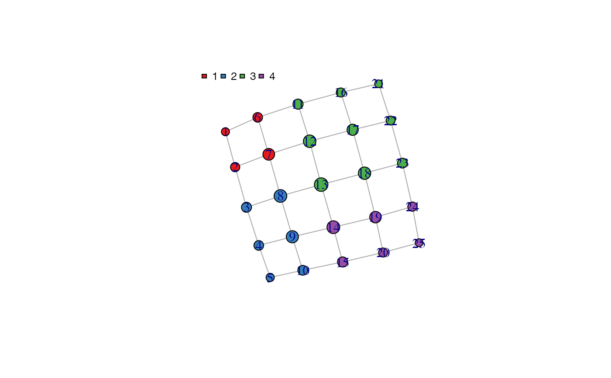
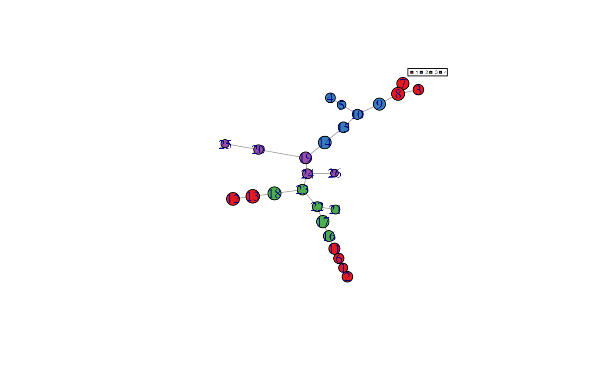

find_trajectories.RdFind trajectories in the MST All the trajectory or choose the nodes.
find_trajectories(processed_data, f_sim_map, f_graph)
| processed_data | Dataframe. Processed from original data. |
|---|---|
| f_sim_map | TDAmapper object. |
| f_graph | igraph object, out put from graph.adjacency. |
Dataframe with different similarity measures
my_trajs <- find_trajectories(sim_dat, my_tda, my_graph)#> trajElmnts clusterTraj #> 1 2 1 6 11 16 17 22 23 1>3 #> 2 3 8 9 10 15 14 19 24 23 1>2>4>3 #> 3 4 5 10 15 14 19 24 23 2>4>3 #> 4 7 8 9 10 15 14 19 24 23 1>2>4>3 #> 5 12 13 18 23 1>3 #> 6 21 22 23 3 #> 7 25 20 19 24 23 4>3 #> 8 26 24 23 NA>4>3#> covid_id trajPaz trajPazclusters trajNumb trajElmnts trajLenght #> 1 2 NA 1 2 1 6 11 16 17 22 23 8 #> 2 2 NA 2 3 8 9 10 15 14 19 24 23 9 #> 3 2 NA 3 4 5 10 15 14 19 24 23 8 #> 4 2 NA 4 7 8 9 10 15 14 19 24 23 9 #> 5 2 NA 5 12 13 18 23 4 #> 6 2 NA 6 21 22 23 3 #> SJ SI SL JW clusterTraj #> 1 0 0 0.0009118820 0 1>3 #> 2 0 0 0.0003354626 0 1>2>4>3 #> 3 0 0 0.0009118820 0 2>4>3 #> 4 0 0 0.0003354626 0 1>2>4>3 #> 5 0 0 0.0497870684 0 1>3 #> 6 0 0 0.1353352832 0 3#> # A tibble: 6 x 4 #> covid_id id node cluster #> <int> <int> <int> <fct> #> 1 2 568 NA NA #> 2 4 1800 NA NA #> 3 7 2794 NA NA #> 4 8 2830 NA NA #> 5 8 2836 NA NA #> 6 8 2838 NA NA